
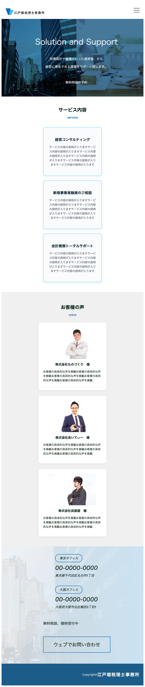
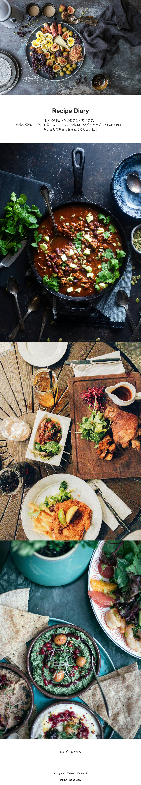

Asumikuru Portfolio
-Web Cording-
About
看護師20年で培ったスキル
長年の経験から、現場での優先順位を瞬時に判断、的確にタスクをこなす行動力があります。
また、患者様に寄り添う中で磨かれた「傾聴スキル」でクライアント様のご要望に寄り添います。
2児の母としての強み
2人の子どもを育てながらWeb制作の学習時間を捻出してきたため、タイムマネジメントに優れています。
限られた時間の中で最大の成果を出すためのスケジュール管理を徹底しています。
Fammスクールでの経験
2023年にFammスクールのWebデザイン講座を卒業。
その後一度は挫折したコーディングに独学で再挑戦。
コーディングスキルを磨きつつ、皆様のWebページ作りをお手伝いします。
Skills
HTML(Pug)/CSS(SCSS)
実機チェックまで妥協せず、変化に強い綺麗なコードでLPを制作できます。
Responsive
スマートフォンやタブレットなど、どの端末で見ても崩れず、読みやすい表示になるよう丁寧なコーディングを心がけています。
jQuery
スムーススクロールやハンバーガーメニューなど、Webサイトに必要な基本的な動きを実装し、ユーザーが使いやすくなる工夫を大切にしています。
Works

（架空）医療系サイト模写コーディング
クリニックサイトをポイントを絞って模写コーディングしました。
こだわり・挑戦
・Pug / Sass（FLOCSS設計に準拠）を用いたコンパイル環境でのコンポーネント化
・JavaScript（バニラ）による、PC版ダイナミックなスライドダウンナビゲーションの実装
・レスポンシブ時におけるハンバーガーメニューへのスムーズな切り替え制御
・日本語表記の後ろに薄く英語表記を入れるデザインを再現
・医療系サイト特有のスケジュール表記を再現。レスポンシブ時の表記崩れも防止

（架空）練習用Webサイト
Fammスクール様よりいただいた案件。レスポンシブ・ハンバーガーメニューに挑戦しています。
こだわり・挑戦したこと
将来的なSEO（検索上位表示）への好影響を意識しHTMLマークアップを行いました。クラス名の付け方にもこだわり、後からの修正や文言変更がしやすい「保守性の高いコード」を実現しています。

（架空）Recipeサイト
Codejump様の模写コーディング。早く正確なコーディングを目指しました。
こだわり・挑戦したこと
実機チェックを何度も重ね、スマホやタブレットでも表示崩れがないよう、細部までこだわり抜いてコーディングしました。
Contact
まず試したい方は、ココナラよりお気軽にお問い合わせください。
ココナラで相談する本格的なお仕事のご用命は、Lancersへ。
Lancersで相談するクラウドワークスでもご依頼いただけます。
クラウドワークスで相談する